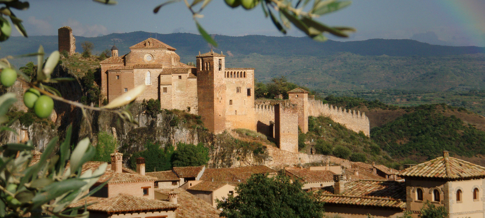

Aragón
VIDEOS
Aragón es una región llena de historia y belleza natural, con una rica oferta de actividades culturales, turísticas y recreativas. Desde sus impresionantes monumentos históricos, como el Palacio de la Aljafería en Zaragoza y la Catedral de Jaca, hasta sus paisajes naturales únicos como el Parque Nacional de Ordesa y Monte Perdido, Aragón ofrece una experiencia inolvidable para cada visitante. Además, la región cuenta con una variada oferta gastronómica, destacándose por sus platos tradicionales como el ternasco, las migas aragonesas y el jamón de Teruel.
Las ciudades y pueblos de Aragón reflejan su rica historia y cultura, con lugares como Zaragoza, Huesca y Teruel, que invitan a explorar su arquitectura, museos y festividades. La vida cultural aragonesa es vibrante, con eventos como la Semana Santa de Zaragoza y las fiestas del Pilar, que atraen a miles de visitantes cada año.
Además, Aragón ofrece excelentes oportunidades para actividades al aire libre, como senderismo, esquí y escalada en los Pirineos, así como rutas de ciclismo en sus impresionantes paisajes montañosos. Ya sea en sus ciudades o en su naturaleza, Aragón proporciona experiencias únicas y memorables para todo tipo de viajeros.